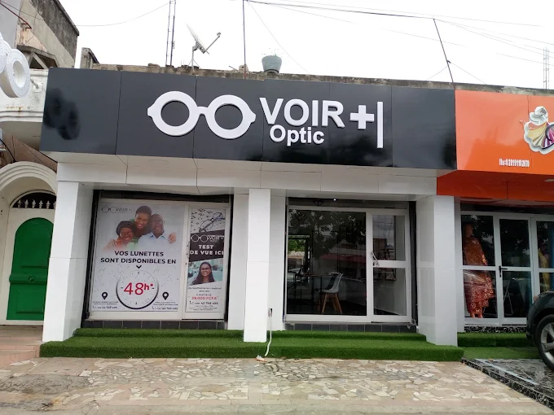
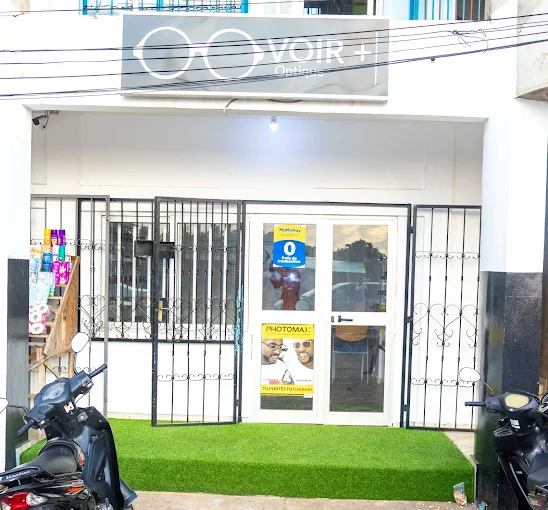

★★★★★
"Une équipe vraiment professionnelle et à l'écoute. L'examen de vue au cabinet de Cotonou a été très complet, et j'ai trouvé ma monture idéale en 20 minutes. Je recommande à toute ma famille !"
Depuis plus de 10 ans, Voir + Optic place la santé visuelle des Béninois au cœur de sa mission. Découvrez ceux et celles qui œuvrent chaque jour pour votre vision.
"Chez Voir + Optic, nous croyons que bien voir, c'est bien vivre. Notre mission est d'offrir une optique de qualité, accessible à tous les Béninois."
Opticienne Référente & Directrice
Diplômée en Optométrie, 10 ans d'expérience. Spécialisée dans l'adaptation des lentilles et le bilan visuel enfant.
Opticien Collaborateur — Cotonou
Passionné de design et de technologie optique, il guide chaque patient avec expertise dans le choix de sa monture.
Assistante Opticienne — Calavi
Chaleureuse et attentionnée, elle veille à ce que chaque visite soit une expérience agréable et rassurante.

| Lundi – Vendredi | 8h00 – 19h00 |
| Samedi | 9h00 – 18h00 |
| Dimanche | Fermé |

| Lundi – Vendredi | 8h30 – 19h00 |
| Samedi | 9h00 – 18h00 |
| Dimanche | Fermé |
Notre équipe est prête à vous accueillir et à prendre soin de votre vision.
Prendre rendez-vous →Sans engagement • Réponse sous 24h • Examen de vue gratuit sur RDV